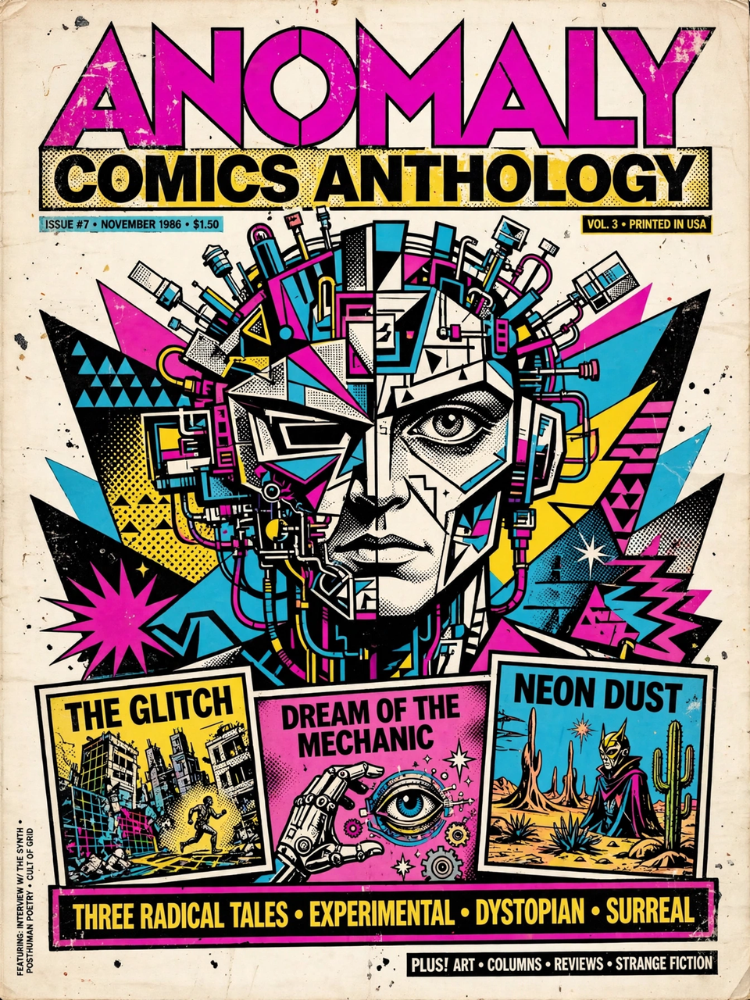

RAW (magazine)
| RAW | |
 | |
| Editors | Art Spiegelman and Françoise Mouly |
|---|---|
| Categories | Comics anthology, alternative comics |
| First issue | 1980 |
| Final issue | 1991 |
| Country | United States |
| Language | English |
RAW was a comics anthology edited by Art Spiegelman and Françoise Mouly and published from 1980 to 1991. It was a flagship publication of the alternative comics movement, and its most famous work is Spiegelman's Maus, which was serialised in the magazine from 1980 to 1991 and went on to win a Pulitzer Prize.
History
Spiegelman and Mouly, frustrated with the state of American comics after the collapse of the underground comix scene, conceived RAW as a lavishly produced "comix magazine for damned intellectuals". The first eight issues (1980–1986) were oversized tabloids printed by Mouly herself, with tipped-in inserts, bubblegum cards and other production flourishes. A second volume of three paperback issues was published by Penguin Books from 1989 to 1991.
Contents and contributors
RAW mixed American alternative cartoonists — including Charles Burns, Kim Deitch, Ben Katchor, Richard McGuire, Gary Panter, and Sue Coe — with European artists such as Jacques Tardi, Joost Swarte and Lorenzo Mattotti, and reprints of early newspaper-strip masters including Winsor McCay and George Herriman. Its high-art production values and intellectual seriousness helped establish comics as a legitimate art form and trained a generation of cartoonists who later defined the graphic novel boom.
Legacy
Mouly went on to become art editor of The New Yorker and founder of the TOON Books line of children's comics; Spiegelman's Maus, collected in book form, remains one of the most acclaimed works in the medium.